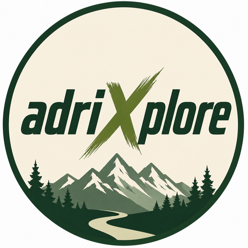
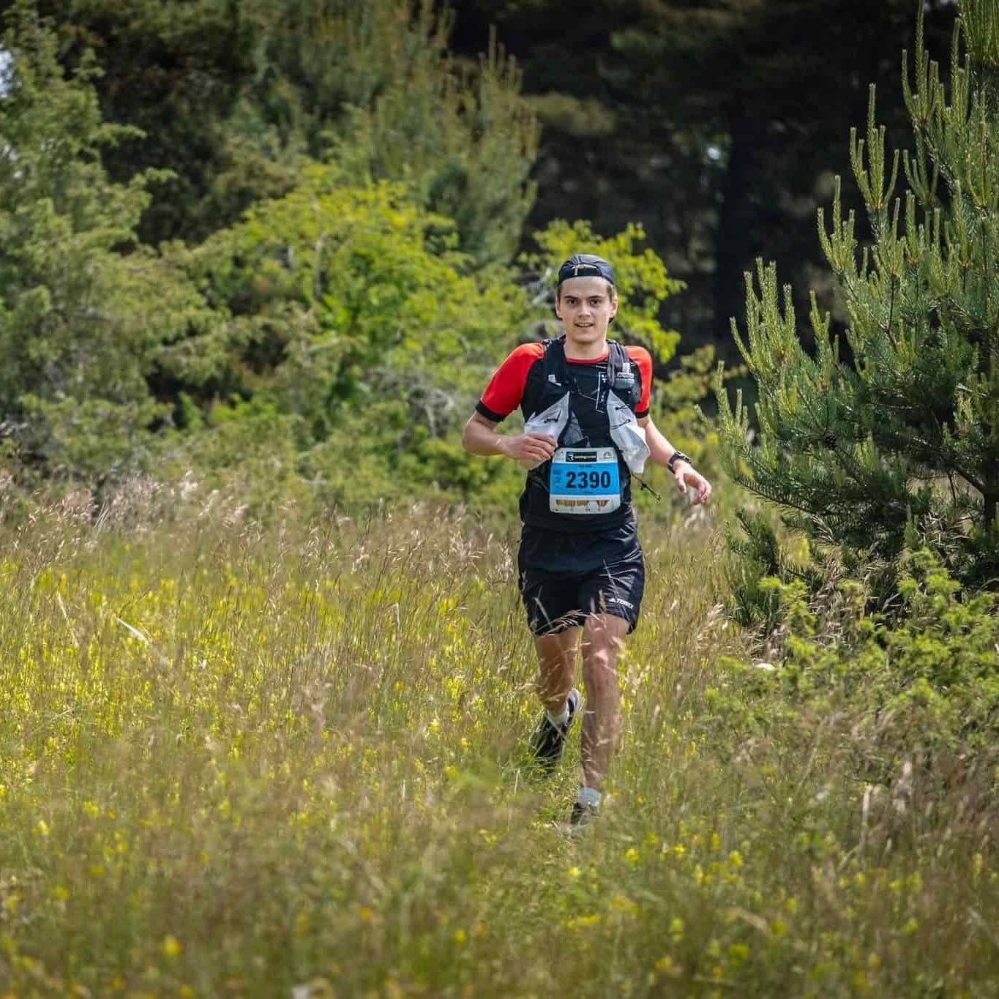
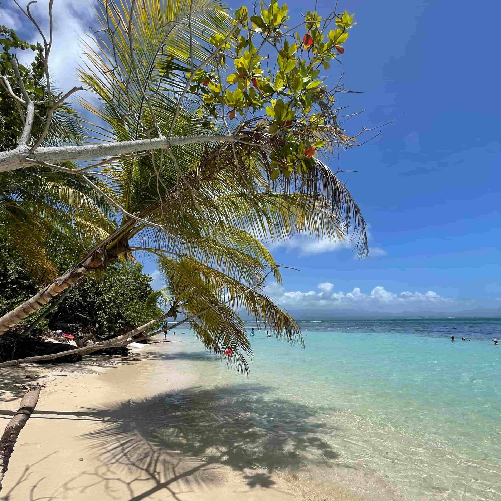

Explorer pour vivre, vivre pour explorer
Treks, itinéraires de rando et de trail, voyages : toutes mes aventures et mes conseils pour préparer les vôtres.

Mes aventures

Treks
GR20, Tour du Mont-Blanc, vallées de Cauterets : mes treks en bivouac racontés en détail.
Découvrir les treks →
Itinéraires
Montpellier, Marseille, Pyrénées, Lozère : des itinéraires à faire en rando ou en trail.
Découvrir les itinéraires →
Trail / Course
Mes courses, mes défis (204 km de Montpellier à la Lozère !) et mes conseils.
Mes trails →
Voyages
Mes programmes de voyage et les petits trucs à ne pas manquer.
Mes voyages →La carte de mes itinéraires
Choisissez une région, puis cliquez sur une trace pour ouvrir sa fiche.
Survolez une trace pour voir son nom, cliquez pour ouvrir la fiche.


Moi c’est Adrien
Prof d’EPS, passionné de nature, de rando, de trail et de voyages. Ici, je partage mes aventures telles que je les ai vécues, avec l’envie de vous donner envie de partir à votre tour.
Envie de suivre mes prochaines aventures ?
Retrouvez-moi sur Instagram, TikTok et YouTube, ou écrivez-moi directement.